Skip to content first
The first Tab stop on every page jumps past the header, so it is not read again on each page.
Case study 03 · E-commerce
An e-commerce platform for women with visual impairments. Colour, size, fabric and the bag all work from the first key press.
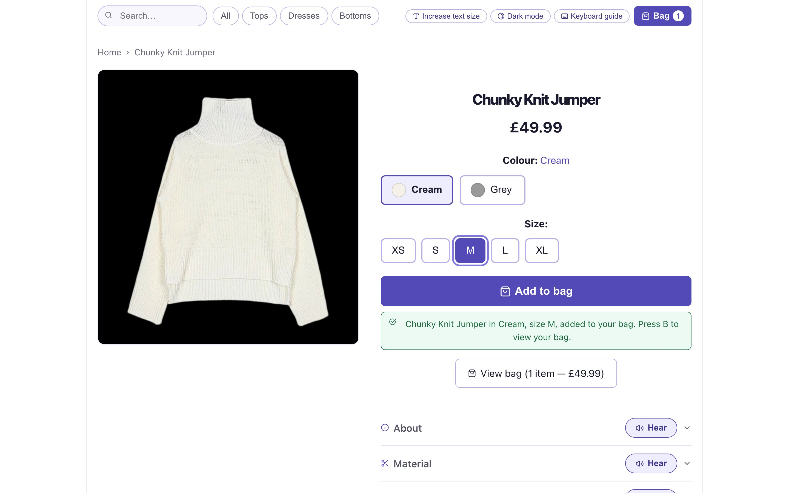
For a screen reader user, a swatch with no name, a filter that only works on hover or a checkout that times out is a locked door.
These are design failures, not a property of visual impairment. Prati et al. on sites that pass a checklist and still fail their users.

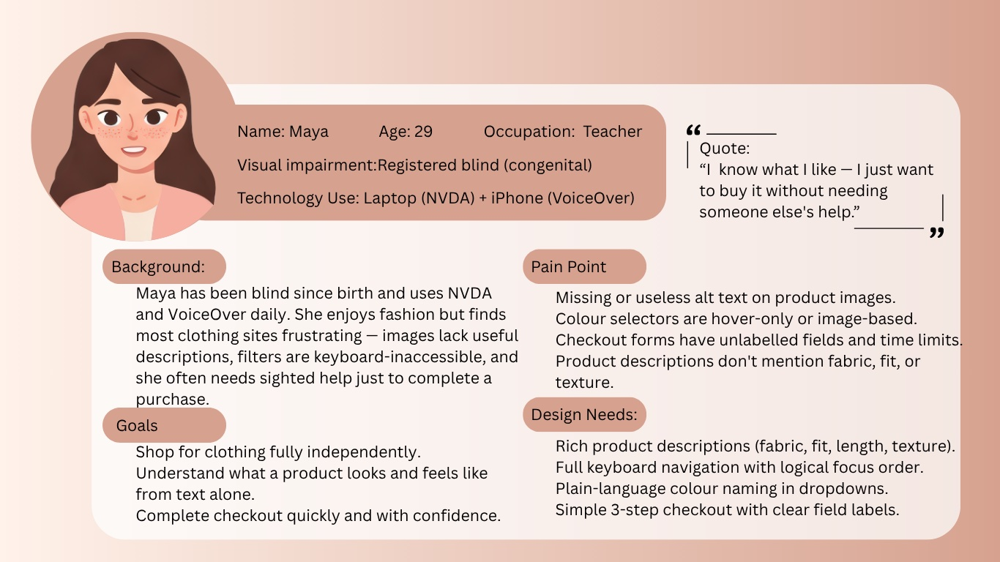
I know what I like — I just want to buy it without needing someone else’s help.
She loves clothes and often needs sighted help to finish a purchase. Six requirements could not be dropped.
What gets in the way
What the interface must do
Filter by principle or source to see what each one changed.
The first Tab stop on every page jumps past the header, so it is not read again on each page.
Colour and size are radio groups, not dropdowns: every option is visible and says its name, like “Colour Cream, currently selected”.
Adding to the bag is confirmed through a live region while focus stays on the product. Jumping to the bag was rejected because it breaks browsing.
Add to bag will not proceed without a size, and says exactly what is missing and how to fix it.
About, Material, Fit, Origin, Delivery and Returns sit in labelled rows, each with its own Hear button. Material adds a close-up of the knit.
All, Tops, Dresses and Bottoms. When you cannot scan a menu, every extra option costs another announcement.
Add to bag is full width and at least 52px tall; colour and size options are 44px.
Name, price, colour, size, Add to bag, then the details. The DOM follows the order in which people decide.
One toggle adds a shortcut bar (H for home, B for the bag) and speaks each control’s name, role and state as it gains focus.
Two header toggles on every page. Dark mode switches to white on black; large text raises every font size one step.
Swatches have names, errors have words, and the bag count lives in the Bag button’s label, not only in a badge.
Header, breadcrumb, content, actions: the same order on every page, so the mental model holds.
Use Tab to move into the product, then the arrow keys to choose. The output panel shows what a screen reader announces, using the product’s own labels and messages. Try Add to bag before choosing a size.
£49.99
Items in bag: 0
Turn on Voice to hear each announcement with your browser’s speech engine.
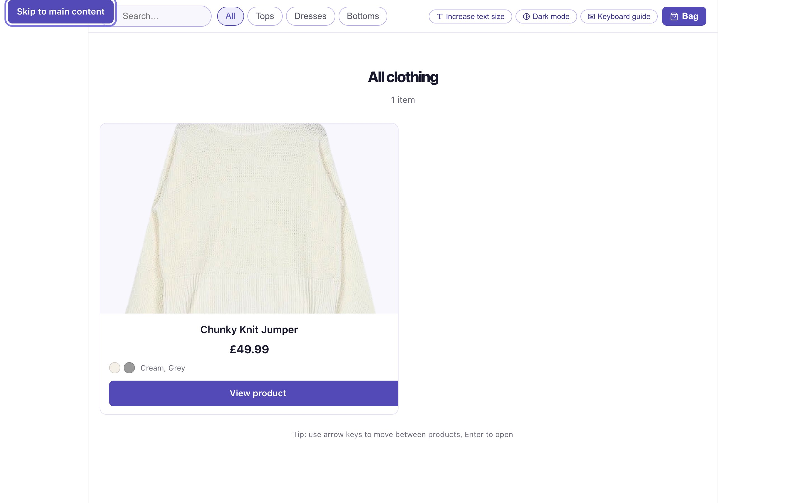
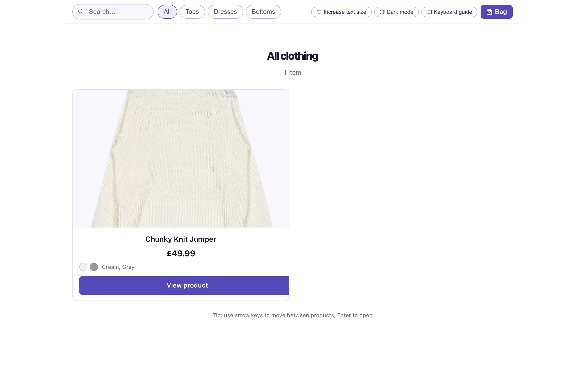
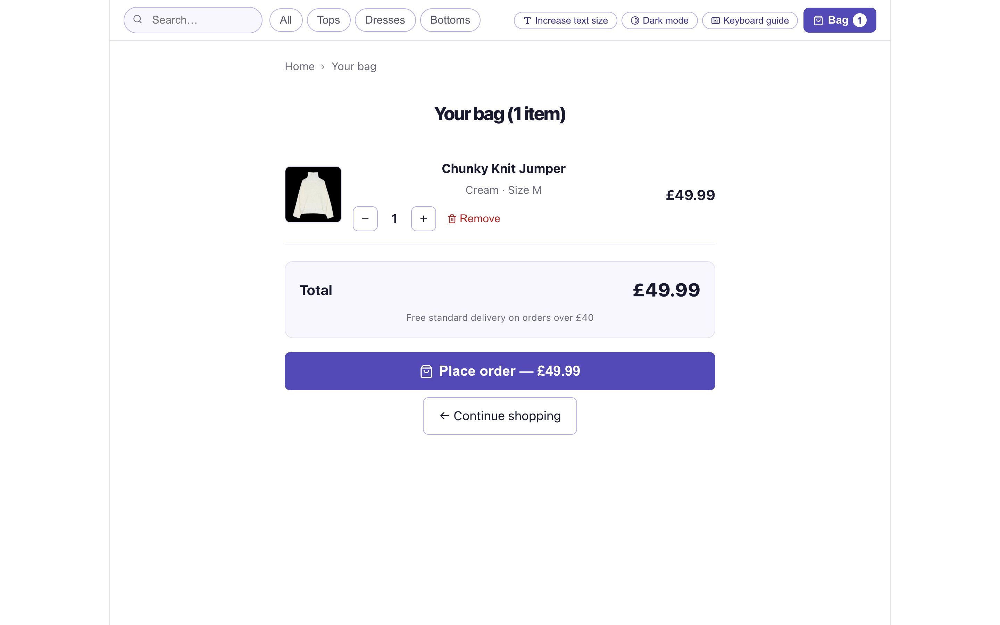
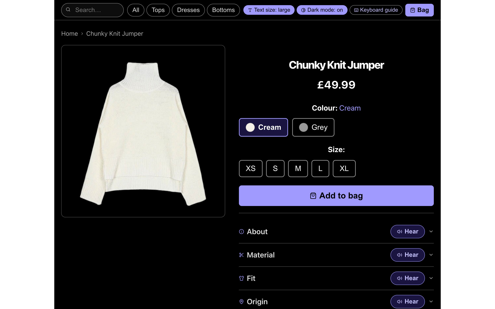
Search, four categories and three accessibility toggles sit in one header that is identical on every page.
The confirmation is written on screen and announced: “Chunky Knit Jumper in Cream, size M, added to your bag. Press B to view your bag.”
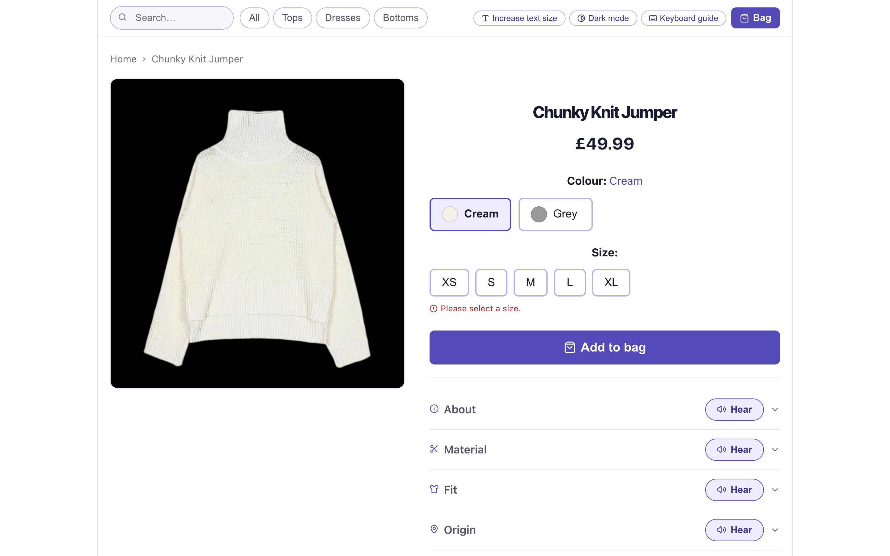
Pressing Add to bag without a size shows “Please select a size.” and speaks the fuller instruction: “Please select a size first. Use arrow keys to choose from the size options.”
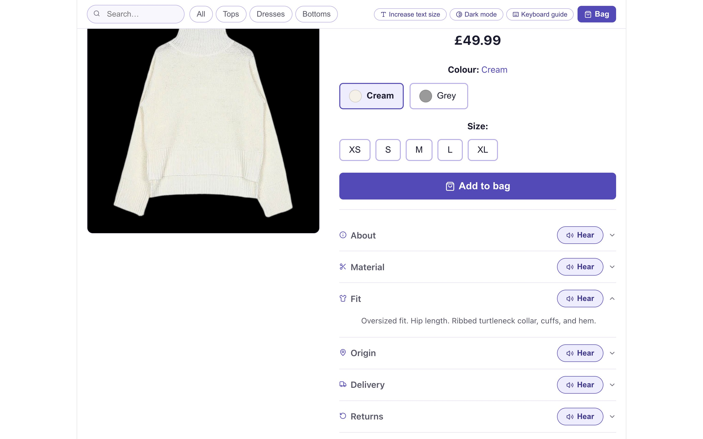
Six labelled rows turn what a shopper would see and touch into text: “50% wool, 50% acrylic. Chunky weight. Soft, warm, and slightly textured.”
Colour, size and quantity are written out, so the bag is fully understandable without seeing it. Place order is the single primary action and ends with a spoken thank-you.
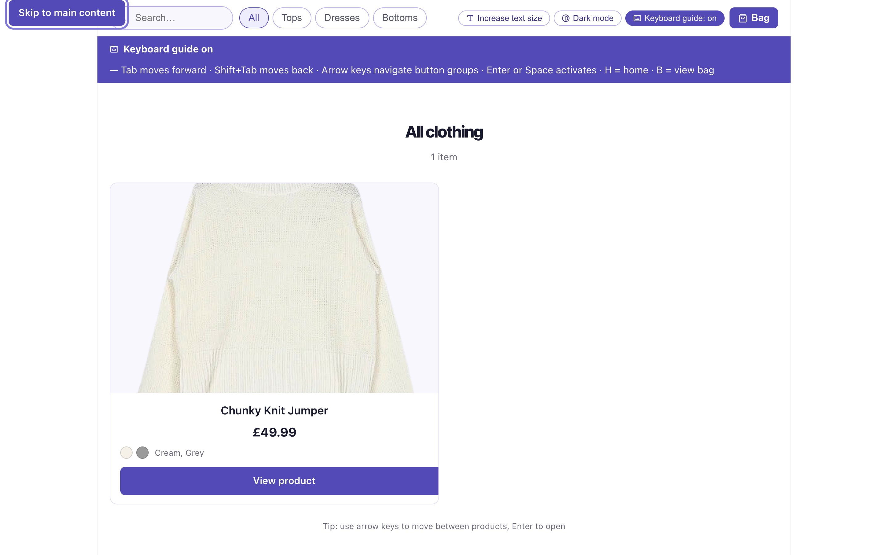
Turning on the guide shows every key the product uses, from Tab and the arrow keys to H for home and B for the bag. It also speaks each control as it receives focus.
Both settings update a single set of CSS custom properties, so every page changes together. Drag the handle, or focus it and use the arrow keys.
The product went from a three-screen wireframe to a high-fidelity bag, then into code.
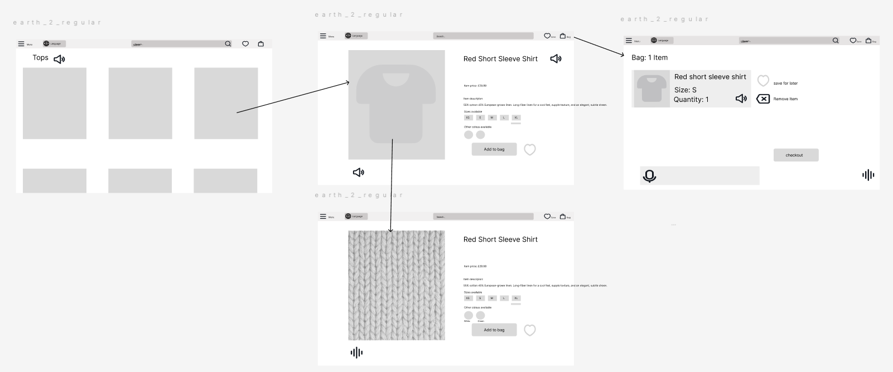
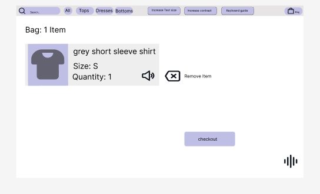
A soft lavender and white palette avoids the loud brand colours of mainstream fashion sites, which add visual noise for people with residual vision. Contrast below is calculated live with the WCAG formula.
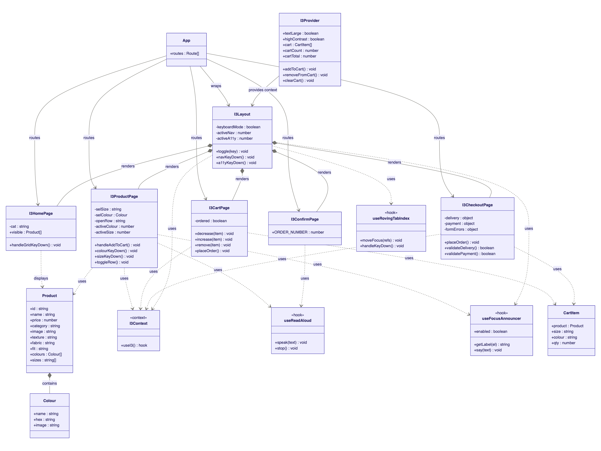
I3Provider shares accessibility and bag state; useRovingTabIndex, useFocusAnnouncer and useReadAloud handle arrow-key movement, spoken focus and Read Aloud.Not yet tested with screen reader users. This is the most important gap in the project: research shows that some barriers only appear when people who use NVDA, JAWS or VoiceOver every day try the product. The checks below are a WCAG 2.1 audit and a heuristic review.
| Criterion | What the product does | Result |
|---|---|---|
| 1.1.1 Non-text content · A | Photos on the listing, the product page, in the bag and in the Material row have alt text naming the item and colour | Met |
| 1.4.1 Use of colour · A | Colour options have text labels, errors have words, and success is announced | Met |
| 1.4.3 Contrast · AA | Every text pair measured on every screen: at least 4.9:1 in standard mode (body text 17.1:1, buttons 6.9:1) and at least 7.6:1 in dark mode, which also meets AAA | Met |
| 2.1.1 Keyboard · A | Browsing, choosing, the bag and placing an order all work without a pointer | Met |
| 2.4.1 Bypass blocks · A | Skip to main content is the first focusable element on every page | Met |
| 2.4.3 Focus order · A | Name → price → colour → size → Add to bag | Met |
| 2.4.7 Focus visible · AA | A 3px lavender ring on every control: 3.8:1 against white, 5.6:1 against black | Met |
| 4.1.2 Name, role, value · A | Colour and size are radio groups; each option has a name and a checked state | Met |
| 4.1.3 Status messages · AA | Add to bag is confirmed in an assertive live region; quantity changes and the order confirmation are polite. Focus never moves | Met |
| Heuristic | Finding | Rating |
|---|---|---|
| H1 Visibility of status | Add to bag is confirmed on screen and in a live region; the order confirmation uses a status role | Pass |
| H2 Match with the real world | Plain-language colour names such as Cream and Grey, never catalogue codes | Pass |
| H3 User control | Colour and size can be changed at any time; bag items can be removed or re-counted | Pass |
| H4 Consistency | Header, breadcrumb, content, actions: the same order on every page | Pass |
| H5 Error prevention | Add to bag is blocked until a size is chosen, with a spoken explanation | Pass |
| H6 Recognition over recall | Details sit in labelled rows; the keyboard guide keeps every shortcut on screen | Pass |
| H7 Flexibility | H for home and B for the bag; category filters shorten sequential browsing | Pass |
| H8 Minimalist design | Four categories; cards show only name, price and colours | Pass |
| H9 Recognise and recover from errors | “Please select a size.” on screen, with the fuller instruction spoken | Pass |
| H10 Help | A keyboard guide bar, and a Hear button on every product detail row | Pass |
Run sessions with people who use NVDA, JAWS and VoiceOver daily, across browsers, to confirm every announcement is clear.
Place order currently goes straight to a spoken thank-you. A labelled delivery and payment form is already built; connecting it completes the journey.
The prototype has one fully described product. More items would test filtering, search and browsing at realistic scale.
Only the bag had a high-fidelity prototype. Designing the listing and product pages first would have allowed earlier review.
Recommendations by fabric, fit, warmth and occasion, and spoken search, were planned but descoped for time. They would follow Amershi et al.: transparent and easy to override.